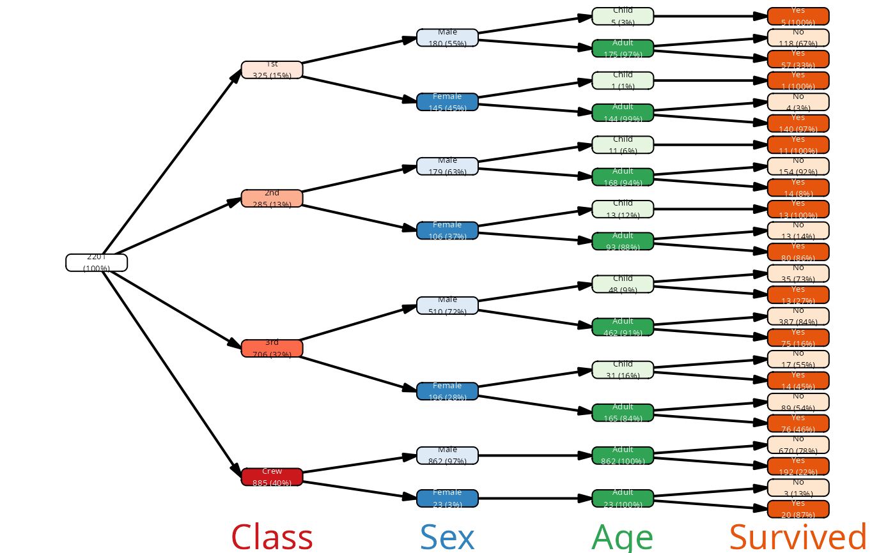
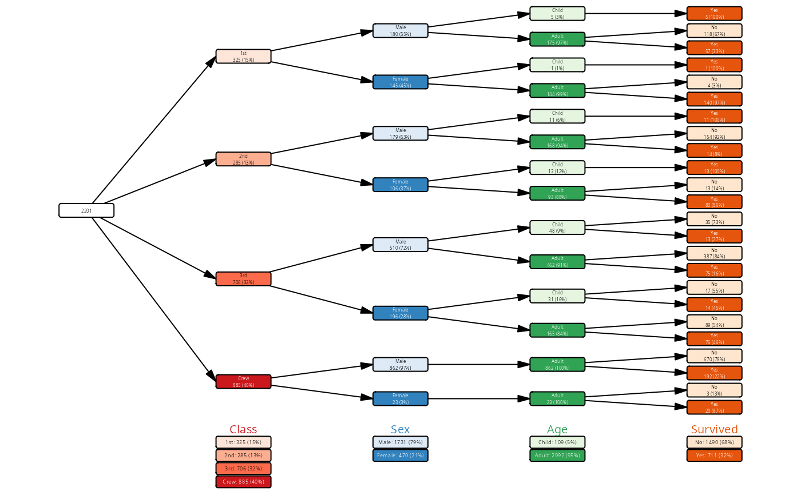
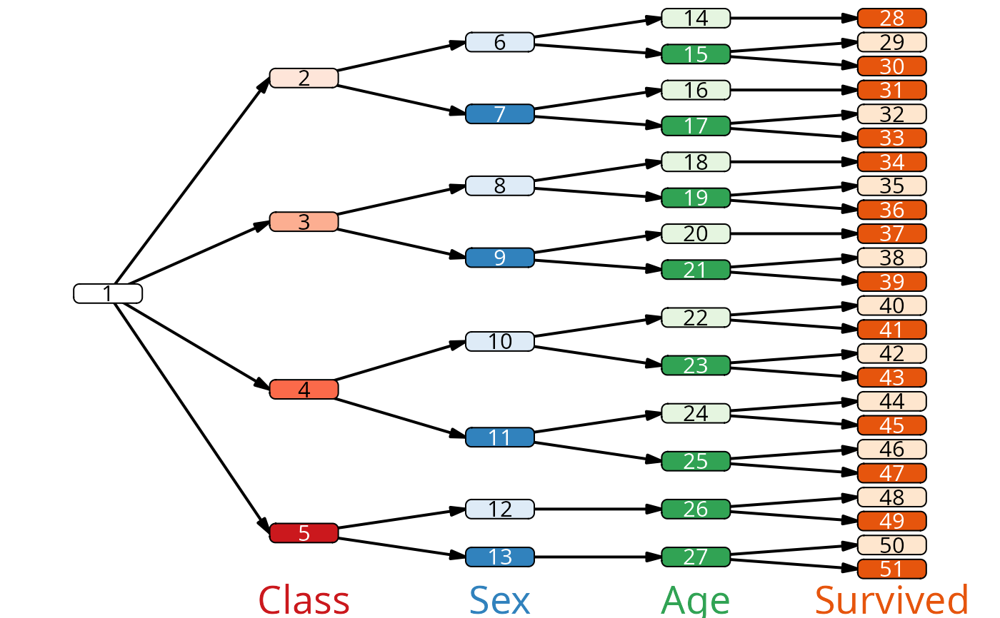
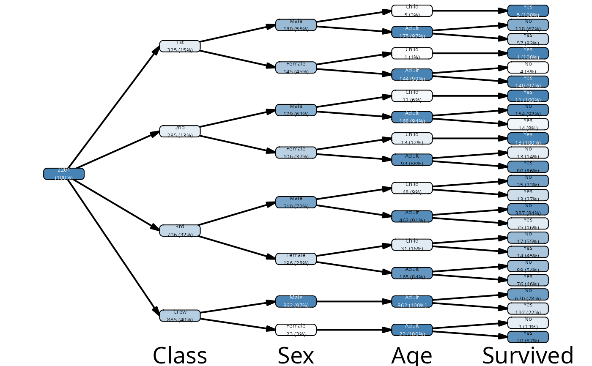
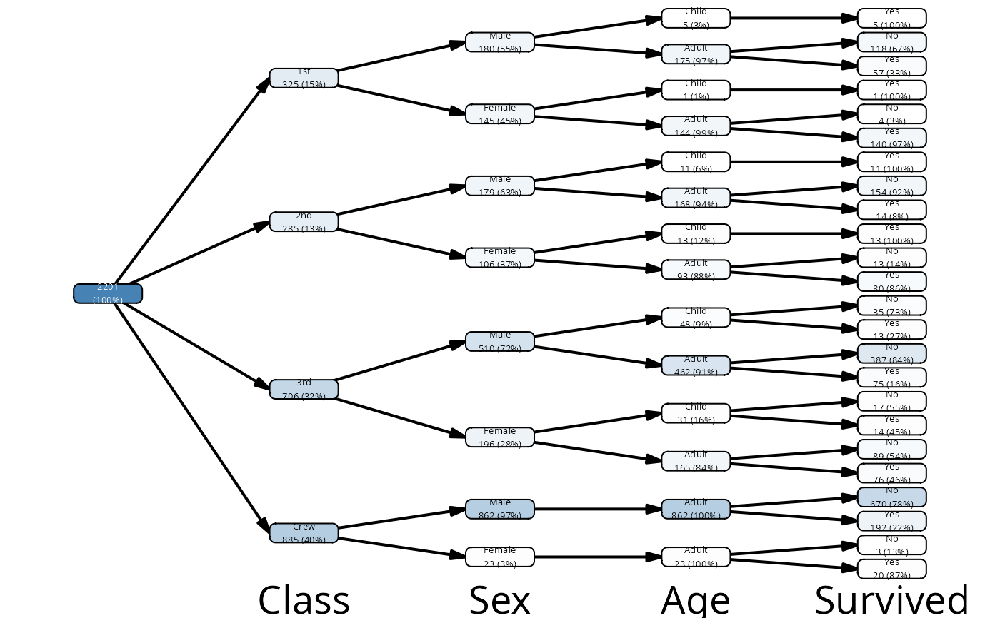

Plot a vtree
plot.vtree.RdPlots a vtree object using a variety of layouts.
Usage
# S3 method for class 'vtree'
plot(x, ...)
plot_vtree(
x,
layout = c("regular", "proportional", "flushed", "precomputed"),
layout_func = NULL,
palettes = c("Reds", "Blues", "Greens", "Oranges", "Purples"),
na_fill = "white",
show_root = TRUE,
var_labels = TRUE,
legend = FALSE,
margins = NULL,
fontsizes = NULL,
lwidth = NA,
lheight = NA,
lwd = 1,
dir = "lr"
)Arguments
- x
A vtree object
- ...
Arguments passed to
plot_vtree()- layout
The layout type, either "regular", "flushed" or "proportional". If "proportional", then the height of each node is proportional to the number of observations in that node. See
add_layout()for details. If layout is NA, then it is assumed that the vtree already has a layout with all necessary columns and no layout is calculated.- layout_func
Custom function to calculate layout (see
add_layout()for details).- palettes
A character vector with names of RColorBrewer palettes to use for the variables. By default these are the default arguments to the vtree_palette() function.
- na_fill
The color to use for NA values. Default is "white".
- show_root
If TRUE (default), show the root node (total population).
- var_labels
If TRUE (default), add names of the variables to the plot. Alternatively, it can be a named character vector where names are the variable names and values are the labels to be displayed for those variables. If FALSE or NULL, no variable labels are shown.
- legend
If TRUE, a legend is added to the plot. Default is FALSE.
- margins
numerical vector: top/right/bottom/left margins in fraction of available space (from 0 to 1).
- fontsizes
Manually select font sizes. A named list with following optional fields:
nodes,var_labels,legend_labels. Each element can be either a number (font size), or either "fixed" or "adaptive"; "fixed" means that all objects within the group will have the same automatically adjusted font, and "adaptive" that each label will be fit separately.- lwidth
Label width relative to available space
- lheight
Label height relative to available space
- lwd
line width for use with plotting
- dir
direction of the tree. One of "lr" (left to right), "rl" (right to left), "tb" (top to bottom), "bt" (bottom to top). Default is "lr".
Details
plot.vtree() plots a vtree object using a variety of layouts. The
default layout, "regular", simply shows the tree structure with all
nodes having the same size. The "proportional" layout shows the nodes
with sizes proportional to the number of observations in that node.
Colors, fill colors, node labels and other details can be customized by
modifying the vtree object directly with the mutate.vtree() function.
Otherwise, default colors and labels are filled in automatically.
Colors
By default, fill colors are assigned automatically based on the variable level in the tree. Each node gets its own palette, and from that palette fill colors are assigned to the levels of the variable by their order of appearance or factor level in the data. The variables with the lowest factor levels or appearing first will get the darkest fill colors. NA values are colored white.
If the vtree object contains, in the node data frame, a column called "fill", then the fill colors will be taken from that column instead of being assigned automatically.
If the vtree object contains a column called "color", then the text
colors will be taken from that column. Otherwise, the either white or
black will be chosen depending on the fill color for each node. You can
easily create this column with the mutate.vtree() function (see
examples below).
Labels
Similarly, some default labels are created automatically. However, if
a label column is present in the nodes data frame, it will be used
instead for node labels. Here, there are several columns that can be
used to create a label:
freq, the frequency for a noden, number of samples of a nodenode_col, name of the variable associated with a nodenode_name, display name of the variable associated with a nodenode_val, value of the variable associated with a nodenode_cv, same aspaste0(node_col, ':', node_val)
(the difference between node_col and node_name is that you can set node_name to whatever you like, while node_col must remain unchanged)
See vtree() for a list of all columns in the node data frame.
Manipulating these columns is straightforward using the
mutate.vtree() function (see below).
For variables which are not associated with the nodes and additional
summary variables (ranges, medians, standard deviations and more), see
summary_vt().
See also
mutate.vtree() for modifying the node data frame, and
add_labels() for adding labels to the nodes. For layout
details, see add_layout().
Examples
vt <- vtree_from_freqtable(Titanic)
# regular plot
plot(vt)

# proportional plot
plot(vt, layout = "proportional")

# create custom labels as simple numbers with mutate()
library(dplyr)
#>
#> Attaching package: ‘dplyr’
#> The following objects are masked from ‘package:stats’:
#>
#> filter, lag
#> The following objects are masked from ‘package:base’:
#>
#> intersect, setdiff, setequal, union
vt |> mutate(label = as.character(1:n())) |> plot()

# a bit more complex example
vt |>
mutate(label = paste0(node_col, " = ",
node_val, '\n',
ifelse(is.na(node_val), '-',
sprintf("%.0f%%", 100 * freq)))) |>
plot()
 # some color manipulation
pal <- colorRampPalette(c("white", "steelblue"))(101)
vt |>
mutate(fill = pal[round(freq * 100) + 1]) |>
plot()
# some color manipulation
pal <- colorRampPalette(c("white", "steelblue"))(101)
vt |>
mutate(fill = pal[round(freq * 100) + 1]) |>
plot()

vt |>
mutate(abs_freq = n / max(n)) |>
mutate(fill = pal[round(abs_freq * 100) + 1]) |>
plot()
